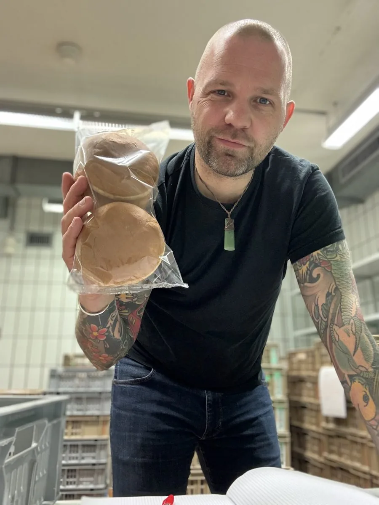
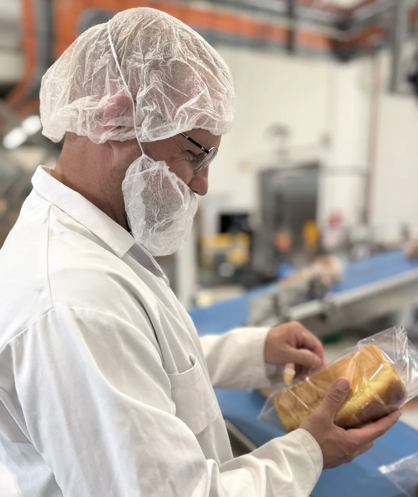
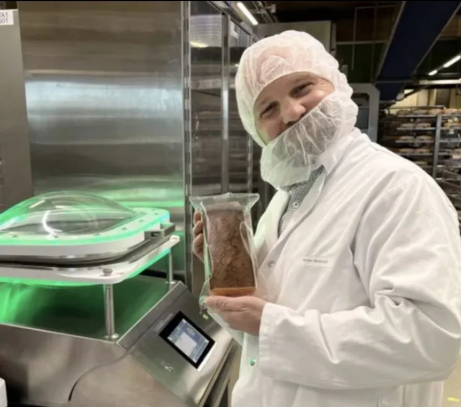

Für Lebensmittelhersteller in Nord- und Mitteldeutschland
Wenn Verpackungsmaterial, Linie oder Stammdaten nicht mehr zusammenpassen,
bringe ich das in Einklang.
Erfolge in Zahlen
Meine Erfolge
- Inbetriebnahme neuer Verpackungslinien
- Systemwechsel SAP S/4 HANA begleitet
- Umstellung auf Mono aPET Folien
- Gründung Arbeitsgruppe recyclingfähiger Folien
Prozess
Ihr Weg zum Erfolg – in vier Schritten
Analyse
- Vollständige Bestandsaufnahme
- Verpackungsmaterialien
- Maschinenparameter
- SAP-Stammdaten
- Linienperformance
Engineering
- Identifikation Einspar- und Optimierungspotenzial
- Materialkosten
- Rezyklatanteil
- PPWR-Konformität
- Umsetzbarkeit

Umsetzung
- Inbetriebnahme und Prozessintegration neuer Packstoffe
- Materialumstellung im laufenden Betrieb
- SAP-Stammdaten an die Materialumstellung anpassen
- Von der Ausschreibung zur Abnahme

Ziel
- Stabile Linie und Prozesse
- Korrekte SAP-Daten
- PPWR-Konform
- Messbar und nachvollziehbar

Häufige Fragen
Fragen zum Strategiecheck
Was kostet der Strategiecheck bzw. die Zusammenarbeit danach?
Der Strategiecheck (30 Minuten) ist kostenlos. Für die anschließende Zusammenarbeit gibt es je nach Aufgabe zwei Modelle: Tagessatz für flexiblen, zeitlich begrenzten Einsatz oder ein projektbezogenes Angebot mit festem Umfang. Die konkreten Konditionen besprechen wir individuell im Strategiecheck.
Für welche Betriebsgröße lohnt sich das?
Entscheidend ist weniger die Betriebsgröße als die Komplexität und der wirtschaftliche Hebel des Projekts. Besonders sinnvoll ist Linienwerk für industrielle Lebensmittelhersteller mit eigener Produktion und wiederkehrenden Verpackungs- oder Materialprojekten.
Bin ich nach dem Strategiecheck zu etwas verpflichtet?
Nein. Der Strategiecheck ist unverbindlich und dient dazu, gemeinsam zu klären, wo Ihre Verpackung heute steht. Ob und wie es danach weitergeht, entscheiden Sie in Ruhe im Anschluss.
Wie lange dauert es, bis ich eine Lösung habe?
Das ist projektabhängig und lässt sich pauschal schwer beantworten. Der Einstieg ist aber immer gleich: ein Audit-Tag vor Ort – vormittags Bestandsaufnahme an der Linie, nachmittags Präsentation eines ersten Lösungsansatzes. Danach wissen Sie, welcher Zeitrahmen für Ihr Projekt realistisch ist.
Wie gehen Sie mit vertraulichen Daten und internen Systemen um?
Für jedes Projekt gilt eine vertraglich festgelegte Stillschweigevereinbarung. Ihre Daten, Prozesse und SAP-Systeme werden ausschließlich für die vereinbarte Aufgabe genutzt.
Der erste Schritt zu Ihrem Erfolg.
Kostenlos und unverbindlich – 30 Minuten für Material, Linie und Stammdaten.
Strategiecheck buchen„Verpackung muss nicht nur nachhaltig sein – sie muss funktionieren.“André Strohwald | Linienwerk – Strohwald Engineering
Kontakt
Sprechen wir über Ihre Linie.
André Strohwald
Linienwerk – Strohwald Engineering
Schulhausstrasse 21
8600 Dübendorf, Schweiz
Termin
Kostenlos und unverbindlich – 30 Minuten für Material, Linie und Stammdaten.
Strategiecheck buchen